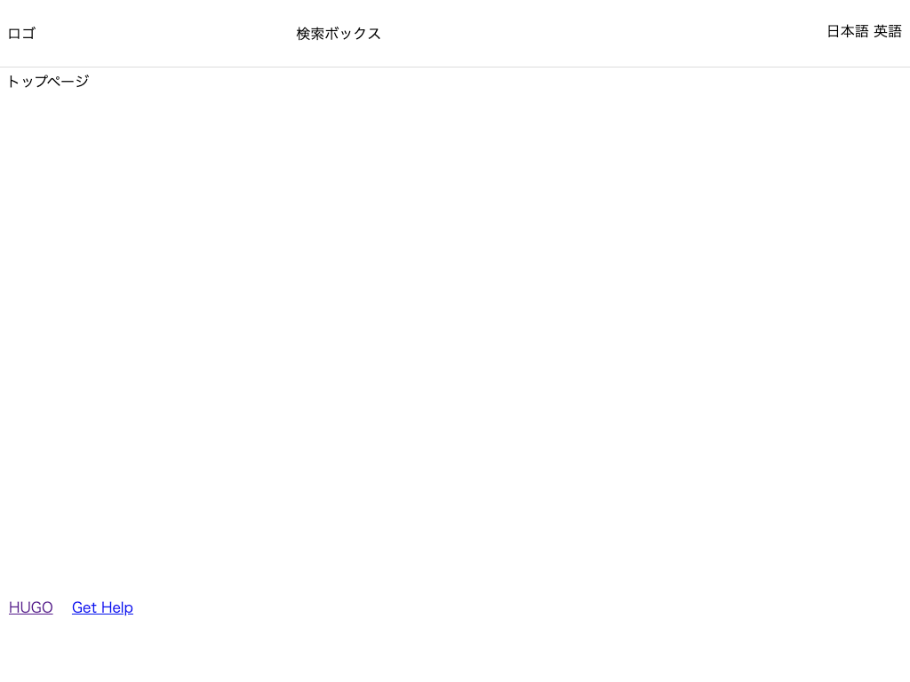

CSS を適用する¶
CSS を適用してみましょう。
CSS ファイルは すでに mytheme/layouts/partials/head.html で読み込まれるように設定しているので、ファイルを置きます。
静的ファイルは、テーマ名/static/ の下に置くことで読み込まれます。
reset.css¶
リセットCSS は、ブラウザごとに異なる CSS を打ち消して、ブラウザ間の表示差異をなくすための CSS です。 今回は、HTML Doctor Reset CSS を使います。
- https://code.google.com/archive/p/html5resetcss/downloads から
html5reset-1.6.1.cssをダウンロードします。 - ダウンロードしたファイルを
reset.cssに変更します。 mytheme/static/cssの下に置きます。
default.css¶
自分で定義する CSS は default.css に記述していくことにします。
1 2 3 4 5 6 7 8 9 10 11 12 13 14 15 16 17 18 19 20 21 22 23 24 25 26 27 28 29 30 31 32 33 34 35 36 37 38 39 40 41 42 43 44 45 46 47 48 | .header { height: 75px; margin: 0 auto; border-bottom: 1px solid #ddd; display: flex; justify-content: space-between; align-items: center; } .search-box { width: 300px; } .home { margin: 0 auto; display: flex; min-height: 600px; } .content { margin: 0 auto; display: flex; min-height: 600px; } .list { margin: 0 auto; display: flex; min-height: 600px; } .nav { width: 300px; } .footer { height: 75px; margin: 0 auto; border-top: 1px solid #ddd; display: flex; justify-content: space-between; align-items: center; } .relevant-sites li { display: inline-block; margin-right: 1rem; } |
動作確認¶
開発サーバを起動して確認してみましょう。
1 2 3 4 | # /Hugo/Sites/theme_tutorial 内 $ hugo server # http://localhost:1313/ にアクセスして確認 |
CSS が適用されました。
